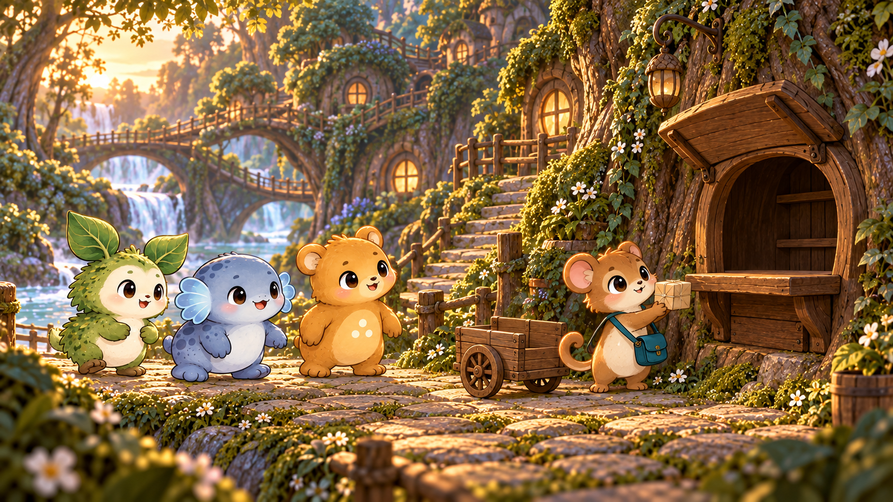

← Watch video 2The bridge wakes up.
Video 3 · After stage 10 · Two six-second shots
12-second generated draft · Separate wordless soundtrack · Two generations, no retries · Estimated $4.80, actual billing not exposed.
Understanding the neighbors’ requests completes the deliveries. The village responds—and a new route opens.

1 · The final deliveryThe last parcel is here. The village lights up!
החבילה האחרונה הגיעה. הכפר מואר!
 2 · A path to the workshop
2 · A path to the workshopThe bridge is open. What is inside the workshop?
הגשר פתוח. מה יש בתוך הסדנה?
Two approved six-second shots are now assembled above. Source images are retained below for comparison.
Wordless sound is prepared separately. Nevet and Zohar appear in the delivery shot; the bridge shot uses a tighter view of Adva, the courier and the river resident.
Exact generation package · Full storybook